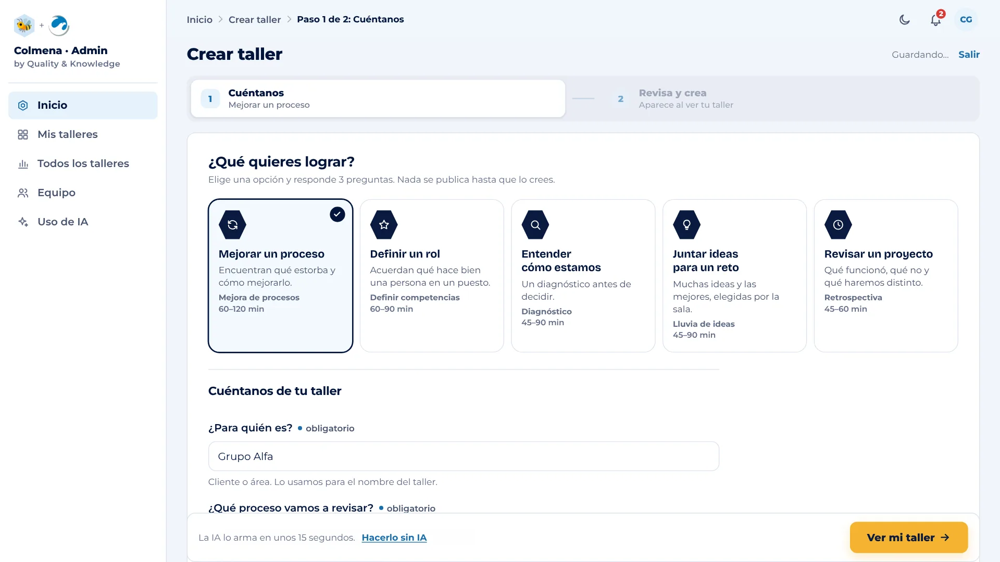
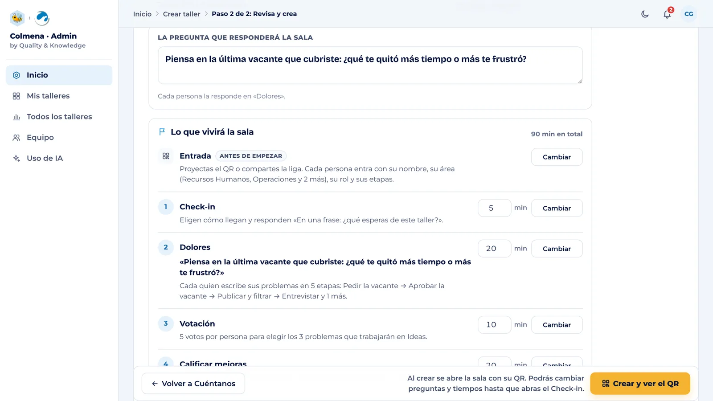

Paso 1 · Antes del taller
Arma tu taller en minutos.
Le cuentas a Colmena qué necesitas y la IA te propone el taller completo. Tú lo revisas y decides.


Tu pantalla
-
1Objetivo
Elige qué quieres lograr.
Cada opción arma un taller distinto, con su propia duración.
- Mejorar un proceso
- Definir un rol
- Entender cómo estamos
- Juntar ideas para un reto
- Revisar un proyecto
-
2Contexto
Responde tres preguntas.
- ¿Para quién es?
- ¿Qué proceso vamos a revisar?
- ¿Qué problemas tiene hoy?
Con eso, Colmena tiene lo que necesita.
-
3Revisión
La IA lo arma. Tú decides.
En unos 15 segundos tienes la pregunta para la sala, los momentos y sus minutos. Cambias lo que quieras antes de crearlo, o lo armas sin IA si lo prefieres.